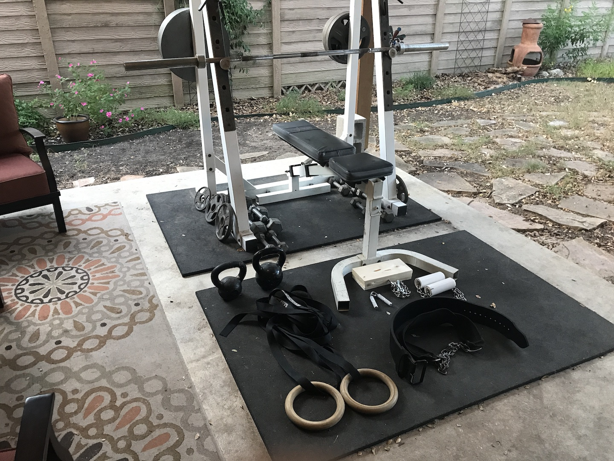
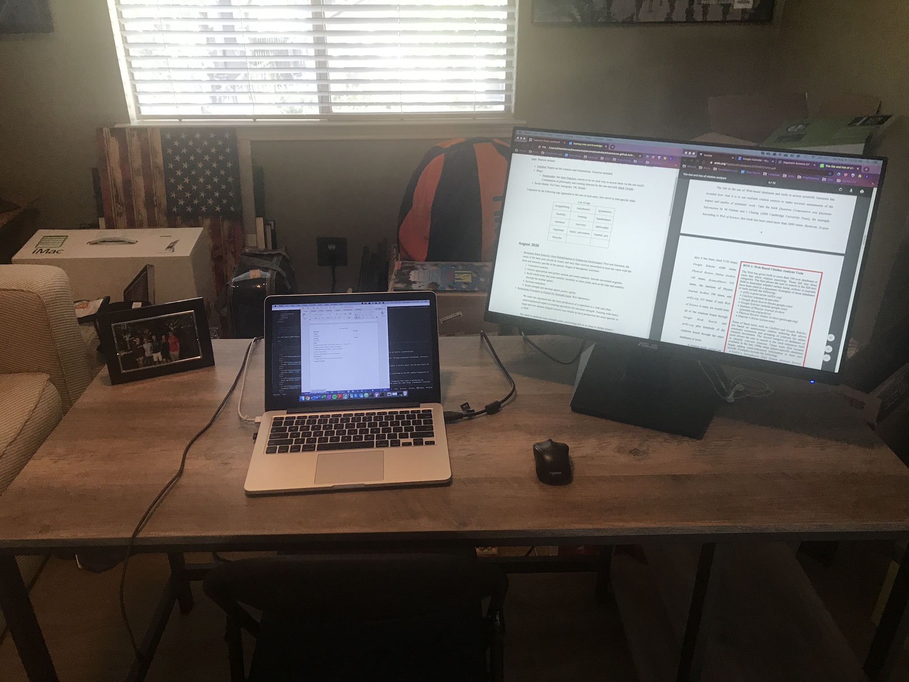
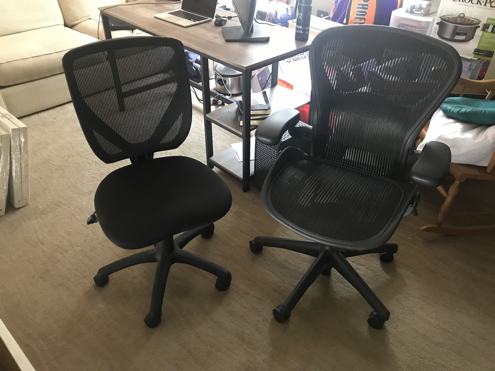

Created: 17 August 2020 / Finished: 27 August 2020
Below are a list of items and practices with descriptions and explanations that have noticeably improved my quality of life or have been said to improve quality of life. Some are complete, while others are awaiting for an appropriate amount of time to pass before giving feedback. Those awaiting feedback are marked with the tentative date I will provide feedback.
Both items and practices have a number in the title indicating the benefit on a scale of 1-10, where 1 is negligible and 10 is my life is incredibly better with it, I am much happier because of it, etc. These are entirely subjective.
Please contact me if you have a life improvement suggestion or experience with any of these. I'd like to hear your thoughts and experiences and am always looking for ways to improve my life.
My lifestyle is quite frugal: I only go out to eat on rare occasions with friends; I spend money on clothes maybe once a year, and even then it is normally second-hand; I don't own any flashy jewelry or extravagant sneakers.
When I want to purchase something, the yes/no decision and amount I'm willing to spend (price doesn't always correlate with quality) depends on the answer to a few questions:
Example items that satisfy all or most questions:
Example items that do not satisfy all questions:
I have a relatively-complete home gym setup on my parents' back porch. It consists of the following (grouped by category):
Cost per item ($):
Total cost: $685
The average commercial gym costs "between $40 and $50 a month" = $480-600 per year = $540 average. The lowest price I've seen is Planet Fitness at $10/month = $120/year. The breakeven point is then:
\[\text{breakeven_avg} = \frac{$685}{$540\text{/yr}} = 1.26 \, \text{yr}\] \[\text{breakeven_cheap} = \frac{$685}{$12\text{/yr}} = 5.71 \, \text{yr}\]I've had the first bullet point's items (squat rack, bench, etc) for 10 years, meaning I've saved:
\[\text{saving_avg} = $540/\text{yr} \times 10 \, \text{yr} - $685 = $4,715\] \[\text{saving_cheap} = $120/\text{yr} \times 10 \, \text{yr} - $685 = $515\]A few more non-financial advantages to a home gym:
See my suggestions on creating a home gym here (will link to essay when finished).
I currently use a Asus 27" VA27EHE monitor in addition to my 13" Macbook Pro. I previously used a Sceptre 20" monitor.
This is arguably the most beneficial productivity change I have made. I now effectively have five MacBook-sized screens or two MacBook-width-2x-length screens. I can be working on something on my MacBook screen and quickly reference an article on the monitor without having to minimize or pull an application back up in front of my current application. I can have a video playing and occasionally watch. I can have both! Working on just my laptop now feels awkward and slow. I highly recommend adopting a second monitor to everyone.
Alfred (Wikipedia) is a productivity app that expedites searching and other processes on macOS.
See approximate time saved using Alfred here.
Despite video games being largely considered unproductive, I've found my Xbox to be incredibly valuable in maintaining certain friendships and even creating other ones. Due to distance limitations (me living a few hours away from some friends), Xbox allows me to talk and play with friends I wouldn't otherwise interact with as much.
Playing video games is also fun and a good way to end a long and/or stressful day.
Dawn simulation is a common method to help users wake up more easily and gently than using a standard alarm clock or that god-forsaken default iPhone alarm.
See the following studies: Avery et al. 2001, Wirz-Justice et al. 1995.
I use uBlock Origin, Adblock Plus, and Ghostery on Chrome. I now have significantly less distractions and can focus more on the content I'm consuming.
This is a huge convenience, especially when outlets are scarce. I can sit anywhere on any couch in any position in my home and still have my phone charging. I have a 6 ft Anker lightning cable, but longer is generally better.
This is nice to have on long excursions (drive, hike, bike, etc) if there isn't a charging port available. I use the Anker PowerCore 13000: it's portable and can charge my iPhone 7 3+ times on one charge. It also has multiple USB ports to charge two devices simultaneously.
I use a Herman Miller Aeron chair, which is considered one of the, if not the, best office chairs out there due to ergonomics and durability.
When adopting or abandoning a practice, I ask two questions:
Once I answer these questions, I weigh the answers against each other. All new practices are given an indeterminate testing period where I can decide if I like it and if it's beneficial for me to continue using.
I originally got this idea from Guzey's Why You Should Start a Blog Right Now. I wholeheartedly agree with virtually every point made in that post. (Many thanks to Guzey for the post and my one-on-one partner for spurring me to actually start it.)
I view my website as my personal knowledge database (video). I can write about things that interest me all while learning more about them, all while allowing for easy reference as long as I have internet access or am at my laptop. I can keep track of the links I've read, quotes I like, and thoughts I have in one organized place and manner.
The website also serves as a beacon for like-minded people to connect with me. While I rarely link it in public forums, I have gotten a few cold emails from people saying they find my posts interesting.
Main post here (will update when I finish it).
I meet with my 1:1 partner every week for around an hour. We discuss the past week's goals and experiences, ask each other questions and give feedback, and plan out the upcoming week. This provides a few benefits:
Theodore Roosevelt is attributed with the quote:
Comparison is the thief of joy
I've found that comparing "up" (smarter, wealthier, more attractive, etc.) often confirms Roosevelt's quote, so I avoid that at all costs. I've come to terms that everyone is born with different circumstances: rich, poor; smart, stupid; attractive, ugly; tall, short. I only give presence of mind to things that I can control, and discard anything that is out of my control.
However, the other comparison option often negates the quote: comparing "down".
As I'm writing this article, I'm sitting in an extremely comfortable chair typing on an expensive laptop with a second monitor next to me in an air-conditioned home with a roof on it in a safe neighborhood with a beautiful park across the street from me and my own, paid-off car in the driveway. In two weeks, I will start a stable, fulfilling job that allows me to pay for a nice apartment and pursue hobbies I enjoy. I will never have to worry about paying for food or other necessities because of my family's support system. I graduated from a top-15 engineering university with debt-free.
Meanwhile, I see some drowning in student loans that will take decades to pay off, living on ramen noodles because of tight budgets, and having to take public transit because they can't afford a car. (Please note I am in no way making fun of less fortunate people, but just using them to make myself aware of how fortunate I am to be born into the family and situation I was. My situation could always and easily be worse.)
I make similar comparisons on a daily basis whenever possible, whether by trigger or voluntary thinking, thereby greatly increasing my gratitude and life satisfaction. A few examples:
Gratitude journaling is another option that allows looking back on old thoughts and to be a bit more expressive.
Avoiding culture war and politics (I will use culture war to include both) has relieved my mind of a huge burden. There are few positives and many negatives that result. I felt angry at the world and others and scared at the path society was headed down. Yet nothing changed after I removed it from my life. The world didn't explode nor did anything drastic happen like the news and politicians and culture soldiers seemed to predict.
I asked my one-on-one partner his opinion and he gave me an excellent heuristic for consuming this type of media (and news in general): only listen or read about it if 1) it will still be talked about in 100 years, and 2) it affects you. This is not to say I bury my head in the sand. I do attempt to stay informed about major events, but everything else the media blows out of proportion, sucking readers down the black hole of negativity and hatred. If news is big enough, I will hear it from a friend, family member, or another source.
Some concrete steps I took to remove culture war from my life:
See my post here for literature and information suggestions.
Spaced repetition is an incredibly efficient way of memorizing vast amounts of information. I can almost instantly recall periodic table information, countries and their capitals, poems, and a host of other useful and fun information.
Friendship should be reciprocal and mutually beneficial: friend A invites friend B to events and takes an interest in his life, while B does the same thing to A. The effort and interest should not be unilateral. I found myself being the sole contributor to quite a few friendships. I was always the one to text first, video chat first, remember important things about them, and so on. I noticed this, so I tried something: I didn't contact those friends for a while to see if they would notice. And they didn't.
Now I no longer have to spend time or energy on dead-end friendships or have any stress in the back of my mind about why they never initiate first.
It's important to note that some people simply lack self-awareness and aren't cognizant that they're being poor friends. I used to be like this until a friend politely set me straight with a "we're always inviting you to stuff, but you never invite us". If you let someone know this and they don't make a better effort, they probably don't want to be your friend.
To organize my friends, I use friends, "a command-line program that helps you to keep track of your relationships with the people you care about". It's very useful for making sure you are maintaining all relationships that are important to you, not just your best friends. You can keep track of activites and take notes.
Social media is largely signaling. Users only post the highlights of their life, giving off the false idea that their life is filled with entirely good times and no bad times. This is important to understand and accept.
I look at Facebook two ways. On the positive side, it's a great way to keep up with friends, family, and acquaintances who you otherwise don't talk to but are still interested in their life (provided they post updates). On the negative side, some people say that if you really cared about keeping up with those people, you wouldn't need Facebook to do so. I find this argument flawed, as it's virtually impossible to maintain a meaningful relationship with that many people.
Snapchat has helped me maintain friendships with a small amount of effort.
These are touted by many (you probably have heard of the biggest proponents) to have magical effects: they supposedly boost testosterone; are healthy for skin; strengthen immunity; increase blood circulation; help in weight loss; boost confidence; make you feel good; increase alertness; and increase heart health.
In order of supposed benefits: no testosterone test ever done, so I can't compare differences; I generally don't have acne nowadays, but did when I was a teenager; I have not been sick in the past 5-8 years, besides food poisoning; no blood circulation measurement available, but reasonable benefit; I've done a few cuts, but they're generally small; I'm naturally confident; subjective, but yes; I am more awake after a cold shower; no measurement available.
Another claimed benefit is increased willpower because of how difficult a cold shower is. It takes willpower to turn the water away from the comfortable warm. This in turn decreases the difficulty of future tasks that are generally unpleasant. I haven't noticed a difference with this.
People often ask about using cold showers to improve cold water tolerance. While cold water still feels cold, the relaxation methods I've learned in ice-cold showers has helped when jumping in 40 °F = 4 °C alpine lakes.